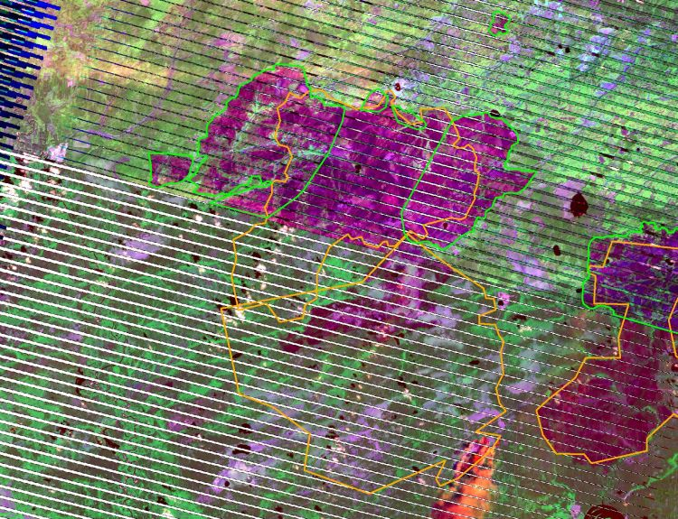

Детектирование сгоревших территорий РФ в 2010: результаты Гринпис России
Методика и результаты проекта Гринпис России по обновлению слоя сгоревших площадей
К осени 2010 стали появляться оценки площадей природных территорий, пройденных пожарами. Первые предварительные итоги были опубликованы Институтом космических исследований РАН и Институтом леса Сибирского отделения РАН. На 18.08.2010 с начала года ученые сообщили о 5,8-5,9 млн. га лесных пожаров. Это в 6-7 раз больше, чем указывалось в официальных источниках МЧС - 0,88 млн. га природных пожаров - на ту же дату. По более поздней оценке Рослесхоза, лесными пожарами 2010 года пройдено 2,1 млн. га земель лесного фонда; по сравнению с 2009 года, площадь лесных пожаров, по мнению Рослесхоза, уменьшилась в 1,2 раза.
Важно также то, что оба официальных органа, собирающих и выдающих официальную статистику (МЧС РФ и Рослесхоз), имеют полный доступ к данным, получаемым ИКИ РАН и ИЛ СО РАН, данные о пожарах поступают с одних и тех же спутников Terra/Modis, Aqua/Modis. Тем не менее, информация о положении дел с лесными пожарами в Российской Федерации специалистами МЧС, Рослесхоза и ученых РАН сильно различалась.
Ни один из вышеперечисленных источников не предоставлял детальный слой с пожарищами. До сих пор не доступны для скачивания на весь 2010 год и оценки сгоревших площадей Modis Fire Team Университета Maryland - Burned Area Product (Примечание: сейчас ежемесячные слои данных MCD45 за весь период 2000-2010 в разных форматах доступны на специальной странице на этом сайте).
Единственный слой, который отражал доступную для пользователей информацию о площадях пожаров, был найден на сайте http://fires.kosmosnimki.ru. Это продукт совместного проекта ИТЦ Сканэкс и сообщества OpenStreetMap, “данные которого могут свободно использоваться в ГИС как для немедленной оценки последствий, так и для последуюшего анализа ущерба экономике и экологии”. Но по нескольким причинам он нуждался в серьезной доработке:
- слой был составлен на 6.09.2010, когда пожарный сезон был еще не закончен
- были оцифрованы пожары только на Европейскую часть России
- полигоны были оцифрованы с разной точностью, многие довольно грубо
Именно поэтому Гринпис России принял решение продолжить работу по созданию карты сгоревших площадей 2010 года.
Источники данных
1. Слой сгоревших площадей на 06.09.2010 с сайта http://fires.kosmosnimki.ru. Далее – исходный слой.
 Исходные данные о сгоревших территориях, OSM/Kosmosnimki. Щелкните на изображении для увеличения.
Исходные данные о сгоревших территориях, OSM/Kosmosnimki. Щелкните на изображении для увеличения.
2. Ежедневные данные о местах пожаров с сервиса FIRMS в наиболее пожароопасный период (август-сентябрь 2010), в основе которых используются данные по тепловым аномалиям MOD14 (подробнее о таких данных). Далее – hotspots. Инструкция по использованию сервиса FIRMS.
 Исходные данные об очагах пожаров, MOD14/FIRMS. Щелкните на изображении для увеличения.
Исходные данные об очагах пожаров, MOD14/FIRMS. Щелкните на изображении для увеличения.
3. Снимки Landsat-7/ETM+ SLC-off, Landsat-5/TM с http://glovis.usgs.gov
 Исходные снимки - Landsat, Glovis. Щелкните на изображении для увеличения.
Исходные снимки - Landsat, Glovis. Щелкните на изображении для увеличения.
4. Снимки Terra/Modis, Aqua/Modis (исходные снимки с LAADS Web, о получении) и склейки программы MODIS Rapid Response System, где выложен архив в удобном для просмотра синтезе каналов). Импорт продуктов MODIS первого уровня обработки с LAADSWeb описан в отдельной статье.
 Пример оцифровки сгоревших территорий по данным MODIS. Щелкните на изображении для увеличения.
Пример оцифровки сгоревших территорий по данным MODIS. Щелкните на изображении для увеличения.
5. Информация о сгоревших населенных пунктах (был составлен отдельный векторный слой)
 Сгоревшие населенные пункты . Щелкните на изображении для увеличения.
Сгоревшие населенные пункты . Щелкните на изображении для увеличения.
6. Растровая карта сгоревших территорий (19.09.2010-29.09.2010). Карта подготовлена Институтом леса им. В. Н. Сукачева Сибирского отделения Российской академии наук совместно с Красноярским отделением Агентства мониторинга и прогнозирования чрезвычайных ситуаций на основе NOAA AVHRR. Подобные карты выпускались каждые 10 дней. (http://www.fire.uni-freiburg.de/GFMCnew/2010/08/17/20100817_ru.htm ). Далее - карта Института леса.
 Пожары по данным Красноярского филиала ФГБУ НЦУКС, 2010 . Щелкните на изображении для увеличения.
Пожары по данным Красноярского филиала ФГБУ НЦУКС, 2010 . Щелкните на изображении для увеличения.
Ход работы
Европейская Россия
За основу был взят исходный слой с http://fires.kosmosnimki.ru. Исходный слой с некоторыми изменениями доступен по адресу: http://gis-lab.info/data/osm/russia, слой russia-fire-a.7z.
Отбор снимков Landsat проводился по критерию присутствия выгоревших площадей на исходном слое, hotspots, сгоревших населенных пунктов. Исходные снимки MODIS использовались в исключительных случаях, когда было известно о крупном пожаре, но покрытие Landsat было облачным (Архангельская область).
Карта Института леса была привязана и использовалась для отбора снимков на крупные по площади пожары.
В случае полной переделки полигона исходного слоя (оцифровка заново) с более позднего снимка Landsat, или по причине регулярного сдвига, исходный полигон удалялся.
Однако, если полигон был оцифрован с более позднего снимка, чем доступный Landsat, то исходный полигон оставляли. Так же поступали и при отсутствии полигона исходного слоя на снимках Landsat. В местах облачности, при невозможности использовать другие снимки, исходный слой тоже не изменялся.
 Пример оцифровки границы пожара по данным Landsat 7 ETM+ (SLC-OFF) . Щелкните на изображении для увеличения.
{kind=link}
Сибирь и Дальний Восток
Ввиду большой территории для Сибири и Дальнего Востока были оцифрованы наиболее крупные пожары. Для этого была привязана карта Института леса – она использовалась для отбора снимков.
Отбор снимков Landsat также проводился по критерию присутствия hotspots, сгоревших населенных пунктов. Склейки MODIS использовались в исключительных случаях, когда было известно о крупном пожаре, но покрытие Landsat было облачным. Однако для Иркутской области склейки MODIS использовались в качестве основного источника о весенних пожарах.
Результаты
В результате работы был получен слой сгоревших природных территорий 2010 года. В нем не были учтены весенние палы сухой травы, ранневесенние лесные пожары (кроме Иркутской области). Пожары на Дальнем Востоке и в Сибири оцифровывались выборочно (скачивались снимки на те территории, где были крупные пожары), для Европейской России были оцифрованы пожары практически на всю территорию.
Общая площадь оцифрованных пожаров на природных территориях - 3,736 млн. га, из них около 500 тыс. - это не лесные.
 Результирующий слой сгоревших территорий. Щелкните на изображении для увеличения.
Результирующий слой сгоревших территорий. Щелкните на изображении для увеличения.
Площади сгоревших территорийна природных территориях в МО и сопредельных регионах составили:
Рязанская – 210,3 тыс. га
Владимирская – 85,2 тыс. га
Московская – 77,7 тыс. га http://www.forestforum.ru/viewtopic.php?t=8928
Тверская – 18,0 тыс. га
Калужская – 7,8 тыс. га
Смоленская – 1,1 тыс. га
Тульская – 0,3 тыс. га
Ярославская - 0 тыс. га
Угрозы и риски природных пожаров в 2011 году и основные итоги сезона лесных пожаров 2010 года (по регионам центра Европейской России) http://www.greenpeace.org/russia/ru/news/19-01-2011-forest-fires/
Данные
Сгоревшие площади
Структура полей данных:
shapeid - номер
burnt – дата снимка, по которому детектировалось пожарище
landuse – лес/не лес
source – спутник/сенсор
area, perimeter – рассчитанные в программе площади
org – источник
Слой не имеет топологии. Это сделано по нескольким причинам:
- чтобы не объединять полигоны, сделанные разными специалистами;
- чтобы сохранить информацию о снимке (спутник/сенсор, дата), по которому оцифровано пожарище.
Рабочий масштаб:
1: 80 000
Проекция:
Geographic, WGS84
Сгоревшие площади в Иркутской области
Структура полей данных:
theid - номер по порядку
area, perimeter -
ha - площадь в га
ha_1000 - площадь в тыс. га
no_irkutsk - пожары за пределами Иркутской области
org - источник
date - даты снимков MODIS
Проекция:
Geographic, WGS84
Сгоревшие населенные пункты
Структура полей данных:
name - название населенного пункта
region - регион
province - район
Проекция:
Geographic, WGS84
Ссылки по теме
Дата создания: 21.04.2011
Автор(ы): Илона Журавлёва